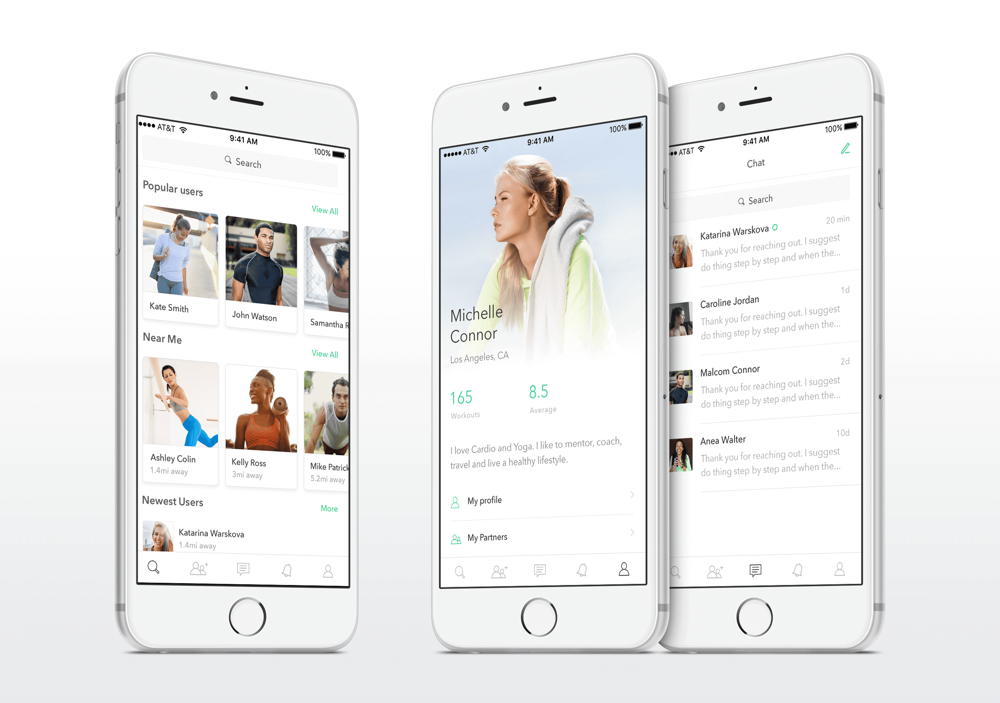

Freelance
Selected freelance projects
About
This is a selection of projects I have worked in the past decade. As a self-employed designer I had a chance to meet and work aside with some of the most talented people across USA, Canada, China, Singapore, Australia, United Kingdom and many more.
My clients where mostly start-ups or small and mid sized companies, where I was being challenged to build the right features for the right users. I grow as designer, by collaboration, research, advice, managing people and lead teams to bring their product into reality. By focusing on providing solution to a problem or a business need and creating a seamless user experience, the is desirable, unique, sticky and covetable.
Rehash
Rehash is the ultimate companion for converting Tweets into beautiful images. User can copy the link, import the post, customize it with our customizable templates and share effortlessly.
User can repost Twitter posts in purpose built, customizable templates, choose from many custom templates for your content, use our advanced tools to personalize your templates and export your template seamlessly.


Pingg
Pingg has been initially thought as a mobile application helping gamers to stay in contact with each other at any time. This idea was imagined to work as a messaging app; simple, efficient and making the most of a high growth market.
The main idea of Pingg is allowing gamers to share a way of contacting each other whilst maintaining their privacy. Currently, the only way to invite one of your gamer friend offline would be by giving informations such as Facebook account, email or phone number.
Pingg is meant to be as usable and simple as some of the main messaging app in the market to provide a service that user will understand instantly. Through a well handled UX, it should help gamers add their friends, send Pinggs and receive Pinggs whatever the platform they are using is.

ArtAttack
ArtAttack is a mobile art marketplace and social network that gives artists and art-lovers the ability to view, buy and sell artwork.
It exists to give artists an invigorating space to exhibit and sell their work, as well as document their development over time. For collectors, buyers and enthusiasts, it provides an opportunity to discover, follow and purchase work from the wealth of emerging talent that is coming out of art schools today.
Sippo
Drinking the correct amount of water is the simplest, most immediate way to feel more energized, focused & productive. Simply by using Sippo at work, you'll never come home tired, fatigued or dehydrated again, while creating a healthier you. Sippo is a smart cup that knows how much you have had to drink and reminds you when you forget. It’s easy to use throughout your day and is the fastest way for busy people to improve their drinking habits.
Staying hydrated with Sippo Cup. Based on the users weight the app calculates and recommends a personalized daily hydration goal, that can change based on user activity and environmental conditions. The user can also adjust the part of the day in the week, where he feels most dehydrated. So Sippo knows when the user needs to drink and will send notifications.


Coffee House
Personal project that I created to experiment with visual and user interactions. There is definitely a story behind it and a little research. Since I am a big coffee lover and enjoy a great cup of coffee, I wanted to work on something that would allow me to locate coffee shops nearby.
OneLess
Big cities are overhauled with cars, so a bike is a great way to make the trip through your city. By choosing your bike over a car, doesn't only helps the environment but also your health benefits and simplifies your life. Riding a bike takes away your passive activity and replaces it with everyday activity that increases the user movements. Getting around with your bike doesn't only saves you money, in exchange it also provides a more relaxing ride through your neighborhood, without being caught in traffic jams with hundreds of other cars.
Eye candy
Selected visual projects from different clients.
